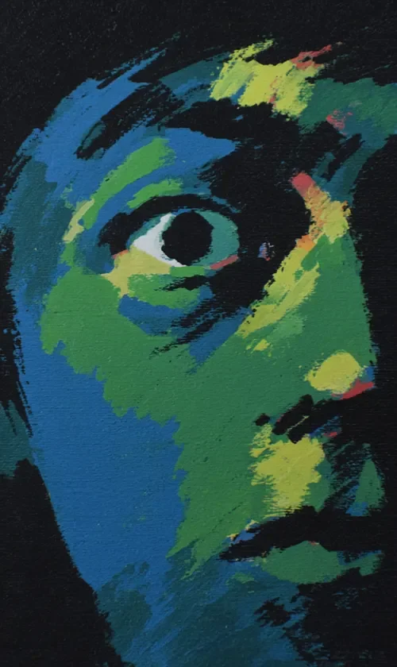

검은 어둠 속에서 얼굴 하나가 떠오른다. 초록과 파랑이 뒤섞인 피부는 살아있는 것도, 죽은 것도 아닌 것 같다. 단 하나의 눈이 보는 사람을 향해 고정되어 있고, 그 눈 속에 무언가 알아서는 안 될 것이 숨어있다. 이 얼굴은 처음부터 이랬을까, 아니면 무언가를 본 뒤에 이렇게 변한 걸까.
A face rises out of black darkness. Its skin, a tangle of green and blue, seems neither alive nor dead. One single eye locks onto the viewer, and inside that eye hides something you were never meant to know. Was this face always like this, or did it change after seeing something it shouldn't have?